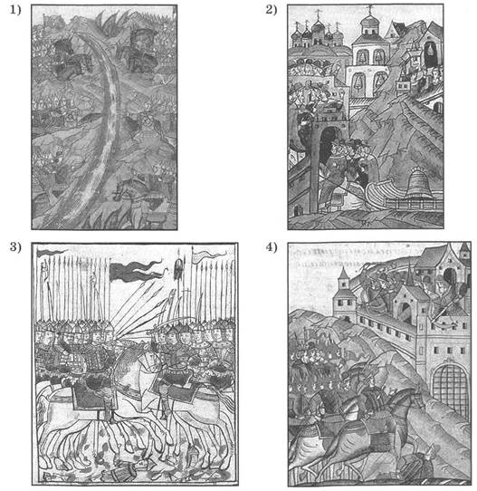
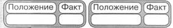
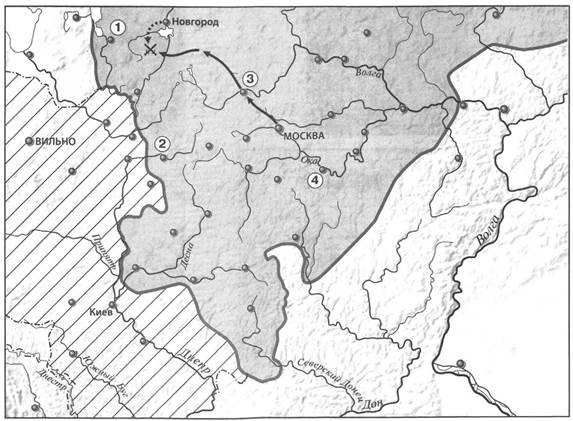
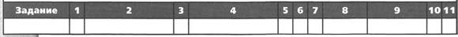
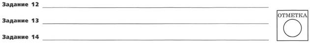
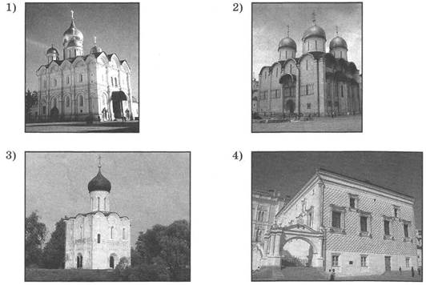
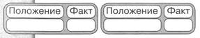
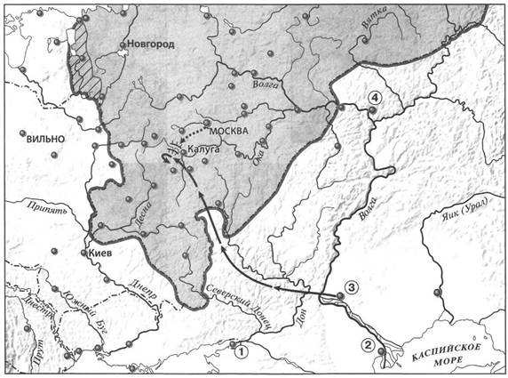
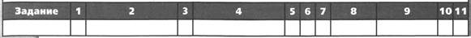
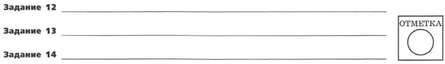

ПРОВЕРОЧНАЯ РАБОТА №1
ВАРИАНТ 1
1. Кто был побеждён Тимуром?
1) Мамай
2) Тохтамыш
3) Едигей
4) Ахмат
2. Установите соответствие между событиями и годами.
СОБЫТИЯ
1) заключение Флорентийской унии
2) смерть Дмитрия Шемяки, окончание междоусобной войны в Московском государстве
3) битва русского войска с войском хана Улу-Мухаммеда под Суздалем
ГОДЫ
A) 1439 г.
Б) 1445 г.
B) 1453 г.
Г) 1485 г.
Запишите буквы, соответствующие выбранным ответам.
3. Прочитайте отрывок из сочинения историка и укажите категорию населения, о которой идёт речь.
Впервые такое военно-служилое сословие встречается около половины XV в. на Рязанской окраине, вооружённые копьями, рогатинами и саблями. А в XVI в. мы видим его распространённым уже по всем южнорусским окраинам... Они соединялись в отдельные ватаги или станицы... Управлялись они своими выборными атаманами и своим общинным кругом. Тут были люди разных состояний... беглые крестьяне и холопы, искавшие личной свободы.
1) посадские люди
2) черносошные крестьяне
3) слуги под дворским
4) казаки
4. Установите соответствие между событиями (процессами) и участниками этих событий (процессов).
СОБЫТИЯ (ПРОЦЕССЫ)
1) междоусобная война второй четверти XV в.
2) борьба боярских группировок в Новгороде
3) битва на р. Ведроши
УЧАСТНИКИ
A) Марфа Борецкая
Б) Даниил Щеня
B) Софья Палеолог
Г) князь Юрий Дмитриевич
Запишите буквы, соответствующие выбранным ответам.
5. Что стало одним из результатов издания Судебника Ивана III?
1) ограничение свободы крестьянских переходов
2) запрет кровной мести
3) появление категорий зависимого населения
4) установление самостоятельности (автокефалии) Русской православной церкви
6. Какое из перечисленных произведений написано Афанасием Никитиным?
1) «Задонщина»
2) «Сказание о Мамаевом побоище»
3) «Хожение за три моря»
4) «Хронограф»
7. Какая из представленных миниатюр посвящена стоянию на Угре?

8. Расположите исторические события (процессы) в хронологической последовательности.
A) поход Едигея на Русь
Б) появление на печати московского князя изображения двуглавого орла
B) падение Византийской империи
Запишите получившуюся последовательность букв
9. Перед вами четыре предложения. Два из них являются положениями, которые требуется аргументировать. Другие два содержат факты, которые могут послужить аргументами для этих положений.
1) Василий I успешно продолжил политику, нацеленную на объединение русских земель вокруг Москвы.
2) В состав Московского государства вошла Тверь.
3) Иван III расширил границы Московского государства.
4) К Московскому государству было присоединено Нижегородское княжество.
Подберите для каждого положения соответствующий факт. Номера соответствующих предложений запишите в таблицу.

Рассмотрите карту «Российское государство во второй половине XV — начале XVI в.» и выполните задания 10-12.

10. Укажите князя, в период правления которого был совершён поход, обозначенный на карте стрелками.
1) Василий I
2) Василий II
3) Иван III
4) Василий III
11. Укажите цифру, которой обозначен город, присоединённый к Московскому княжеству позже, чем остальные города, обозначенные на схеме цифрами.
12. Напишите название государства, территория которого выделена штриховкой на карте.
Ответ:
13. Запишите термин, о котором идёт речь.
Система распределения высших должностей с учётом происхождения и служебного положения предков.
Ответ:
14. Прочитайте отрывок из сочинения историка и впишите имя, пропущенное в отрывке.
Вслед за Василием Тёмным, когда он вышел из казанского плена, приехал служить ему с отрядом... казанский царевич ____. Около половины XV в. ему отдан был Мещерский Городец на Оке с уездом, где среди мещеры и мордвы вёрст на 200 вокруг города испомещена была его дружина. С тех пор и самый город стал зваться именем царевича.
ЗАПОЛНИТЕ ТАБЛИЦУ ОТВЕТОВ


ВАРИАНТ 2
1. Как называлась плата крестьян за проживание на земле при их уходе от землевладельцев в Юрьев день?
1) местничество
2) кормление
3) выход
4) пожилое
2. Установите соответствие между событиями и годами.
СОБЫТИЯ
1) битва на р. Шелони
2) поход Едигея на Русь
3) установление самостоятельности (автокефалии) Русской православной церкви
ГОДЫ
A) 1408 г.
Б) 1448 г.
B) 1471 г.
Г) 1478 г.
Запишите буквы, соответствующие выбранным ответам.
3. Прочитайте отрывок из сочинения историка и укажите имя, дважды пропущенное в тексте.
В Москве не приняли унии и прогнали Исидора. Несколько лет звание московского митрополита оставалось незанятым. В Киеве, после учреждения Витовтом отдельной митрополичьей кафедры, были свои митрополиты, но Москва не хотела знать их. Рязанский епископ ____, как уже наречённый русскими духовными митрополит, имел между ними главенствующее значение и влияние, и наконец в 1448 г. этот архиерей был возведён в сан митрополита собором русских владык помимо патриарха.
1) Сергий
2) Стефан
3) Иона
4) Пётр
4. Установите соответствие между событиями и участниками этих событий.
СОБЫТИЯ
1) разгром г. Ельца в 1395 г.
2) разгром Большой Орды в 1502 г.
3) битва под Суздалем
УЧАСТНИКИ
A) Менгли-Гирей
Б) Василий II
B) Василий III
Г) Тимур
Запишите буквы, соответствующие выбранным ответам.
5. Что стало одним из последствий похода на Новгород войска Ивана III в 1477- 1478 гг.?
1) роспуск Новгородского веча
2) формирование в Новгороде боярской группировки, выступавшей за союз с Литвой
3) учреждение в Новгороде республиканской формы правления
4) гибель Дмитрия Шемяки
6. Икона «Троица» была написана:
1) Феофаном Греком
2) Дионисием
3) Андреем Рублёвым
4) Марко Руффо
7. Какой из представленных памятников архитектуры был построен по проекту архитектора Аристотеля Фиораванти?

8. Расположите исторические события (процессы) в хронологической последовательности.
A) включение в состав Московского государства Смоленска
Б) смерть литовского князя Витовта
B) битва на р. Ведроши
Запишите получившуюся последовательность букв.
9. Перед вами четыре предложения. Два из них являются положениями, которые требуется аргументировать. Другие два содержат факты, которые могут послужить аргументами для этих положений.
1) В Константинополе находилась резиденция вселенского патриарха, считавшегося главой всех православных христиан мира.
2) Византийские делегаты подписали на церковном соборе Флорентийскую унию.
3) В начале XV в. центром православия была Византия.
4) Византия пошла на уступки в вопросах религии за помощь католических стран в борьбе с турками-османами.
Подберите для каждого положения соответствующий факт. Номера соответствующих предложений запишите в таблицу.

Рассмотрите карту «Российское государство во второй половине XV — начале XVI в.» и выполните задания 10-12.

10. Укажите год, когда в состав Московского княжества вошла территория, выделенная штриховкой на карте.
1) 1478 г.
2) 1485 г.
3) 1510 г.
4) 1521 г.
11. Укажите цифру, которой обозначен город, ставший столицей государства, образованного в 1438 г.
12. Напишите имя военачальника, поход которого обозначен на схеме сплошными чёрными стрелками —> .
Ответ:
13. Запишите термин, о котором идёт речь.
Золотой шар с короной или крестом, символ власти монарха.
Ответ:
14. Прочитайте отрывок из сочинения историка и укажите имя, дважды пропущенное в тексте.
С Тверью дело кончилось ещё раньше и решительнее: превращённый договором в московского подручника, князь Михаил Борисович очень недолго вытерпел в таком положении и, по традиции, обратился за помощью в Литву, к ____. Но дело тверского князя имело настолько безнадёжный вид, что король не нашёл для себя выгодным ссориться из-за него с Москвой и отказал в своей помощи. Тверь была взята московской ратью, и князь
Михаил Борисович искал теперь у ____ уже не поддержки, как политический противник Москвы, а убежища, как эмигрант.
Ответ:
ЗАПОЛНИТЕ ТАБЛИЦУ ОТВЕТОВ


ПРОВЕРОЧНАЯ РАБОТА №2
ВАРИАНТ 1
1. Укажите любые три символа великокняжеской власти, существовавшие в период правления Ивана III.
2. Существует точка зрения, что экономическое и политическое развитие Руси в XV в. демонстрировало необходимость объединения всех русских земель в единое Русское государство. Приведите два аргумента в подтверждение данной точки зрения.
3. Прочитайте отрывок из сочинения историка и выполните задания.
Оставив вправо от себя верховья Оки, Ахмат пришёл на р. Угру, в пограничные между Москвой и Литвой места. Но и здесь он не получил никакой помощи от Литвы, а Москва встретила его сильной ратью. На Угре и стали друг против друга Ахмат и Иван III — оба в нерешимости начать прямой бой. Иван III велел готовить столицу к осаде, отправил свою жену Софью из Москвы на север и сам приезжал к Москве, боясь как татар, так и своих родных братьев. Они были с ним в ссоре и внушали ему подозрение в том, что изменят в решительную минуту. Осмотрительность Ивана и медлительность его показались народу трусостью, и простые люди, готовясь в Москве к осаде, открыто негодовали на Ивана.
Укажите год, когда произошли описываемые события.
Какие меры, принятые Иваном III, свидетельствуют о том, что он не был полностью уверен в победе в случае сражения с врагом? Укажите две меры. Какое внутриполитическое обстоятельство представляло опасность для Ивана III?
Чем закончилось противостояние, описываемое в отрывке? Укажите значение этого события для внешнеполитического положения Российского государства.
4. Сравните положение бояр и помещиков в XV в. по линиям, указанным в таблице. На основании сравнения сделайте вывод.
|
Линии сравнения |
Бояре |
Помещики |
|
Как называлось земельное владение? |
||
|
Была ли служба князю условием владения землёй? |
||
|
Можно ли было продать, подарить, передать по наследству свою землю? |
||
|
Что можно сказать о преданности князю, готовности служить ему? |
Вывод:
ВАРИАНТ 2
1. Назовите любые три государства, выделившиеся из состава Золотой Орды в XV в.
2. Существует точка зрения, что развитие общественной мысли в XV — начале XVI в. способствовало росту авторитета Московского государства и великокняжеской власти. Приведите два аргумента в подтверждение данной точки зрения.
3. Прочитайте отрывок из сочинения историка и выполните задания.
После взятия Царьграда турками брат убитого императора Константина Палеолога, по имени Фома, бежал с семейством в Италию и там умер, оставив детей на попечение папы. Дети были воспитаны в духе Флорентийской унии ____ г., и папа имел основания надеяться, что, выдав Софью за московского князя, он получит возможность ввести унию в Москве. Иван III согласился начать сватовство и отправил в Италию послов за невестой. В 1472 г. она приехала в Москву, и брак состоялся. Однако надеждам папы не было суждено осуществиться: папский легат, сопровождавший Софью, не имел никакого успеха в Москве; сама Софья ничем не содействовала торжеству унии, и, таким образом, брак московского князя не повлёк за собой никаких видимых последствий для Европы и католичества.
Впишите год, пропущенный в тексте.
Какие надежды связывал римский папа с браком, о котором идёт речь в отрывке? Почему он имел основания для подобных надежд? Оправдались ли надежды папы?
Какие изменения в политической жизни и культуре страны связаны с этим браком? Назовите не менее двух изменений.
4. Сравните политику Василия II и Ивана III по линиям, указанным в таблице. На основании сравнения сделайте вывод.
|
Линии сравнения |
Василий II |
Иван III |
|
Лишался ли московского престола в период княжения? |
||
|
Политика по объединению русских земель вокруг Москвы (назвать присоединённые, зависимые княжества и земли) |
||
|
Политика по отношению к Орде, результаты политики |
||
|
Законодательная деятельность |
Вывод: